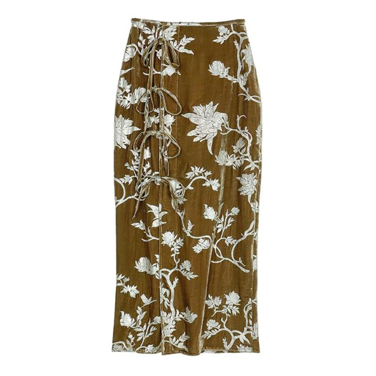

LoomVideo
LoomVideo
FashionVideoBench
text_video_to_video / product_edit
Prompt: Remove the large white lace collar from the shirt.
Prompt: Change the white shirt to a red polka-dot top.
Prompt: Replace the person's white slippers with black boots.
Prompt: Remove the vase from the cabinet.
Prompt: Remove the logo from the clothing.
Prompt: Remove the pearl bag from the person's hand.
Prompt: Add a silver necklace around the person's neck.
Prompt: Remove the necklace from the person's neck.
Prompt: Remove the fur collar from the clothing.
Prompt: Add a delicate butterfly brooch to the left shoulder of the jacket.
Prompt: Change the subject's floral dress to a black blazer dress.
Prompt: Hang a small brown leather handbag on the woman's left shoulder.
text_video_to_video / model_edit
Prompt: Replace the person: A man with a tanned complexion, dark hair, smiling and showing his teeth. He is wearing a wide-brimmed woven straw hat with a yellow cord chin strap, and a solid black long-sleeved shirt with a small logo on the upper left sleeve.
Prompt: Replace the person: A woman with short, wavy brown hair, fair skin, and bright red lipstick with drop earrings. She wears a dark green short-sleeved blouse with button-down front and a knee-length black A-line skirt with dark green floral pattern, carrying a small structured black handbag.
Prompt: Replace the person: A young man with fair skin and styled black hair, wearing dark sunglasses with thick black frames. He is dressed in a black leather jacket over a plain white t-shirt, with white stripes on the sleeves, black pants with a western-style silver buckle belt, a silver geometric pendant necklace, and holding the strap of a quilted black bag.
Prompt: Replace the person: A woman with long, wavy dark brown hair, pearl stud earrings and a pearl necklace. She wears an off-white blouse with vertical pintuck pleating and scalloped lace collar, tucked into medium-blue flared denim jeans, carrying a book under her right arm.
Prompt: Replace the person: A woman with fair skin and brown hair styled in a high textured bun with braided elements. She wears a solid black zip-up vest over a plain white long-sleeved undershirt, with a stand-up collar and subtle zippered pockets, displaying a bright smile.
Prompt: Replace the person: A highly muscular man with short brown hair and light stubble. He wears a tight-fitting olive green short-sleeved t-shirt and tan cargo shorts, equipped with an olive green tactical chest rig with black adjustable straps and buckles, and a black wristwatch.
Prompt: Replace the person: A woman with long straight dark hair wearing dark sunglasses. She is dressed in a dark olive green quilted coat with diamond-stitched pattern, a fitted white turtleneck, off-white flared pants, and pointy-toed white boots with dark soles.
Prompt: Replace the person: A man with short dark hair and stubble, wearing aviator-style sunglasses with gold frames and brown lenses. He is dressed in a long-sleeved burgundy V-neck cardigan with buttons, ribbed cuffs, two square patch pockets, a beige undershirt visible beneath, and standard-fit dark blue denim jeans.
freeform_edit
Prompt: Edit this video: The video features the same man as the original video, who has short, graying hair, a beard, and wears brown-rimmed glasses. He is wearing the same white short-sleeved t-shirt with a rectangular striped graphic and a small sailboat design as the original video, along with the same dark blue cargo shorts and the same silver watch on his left wrist as the original video. The background is an outdoor urban setting with dark walls, deep shadows, and a paved street surface featuring a solid white line. The camera angle is a medium shot that remains static as the man, initially facing away with his hands in his pockets, turns around to face the camera.
Prompt: Edit this video: The video features the same woman as the original video, wearing a light blue short-sleeved polo shirt with white stripes on the collar and cuffs, paired with a dark brown skirt. She has long brown hair and is wearing small stud earrings. The background shows a bright room with white walls and a stack of books on a surface to the left. The same man as the original video walks across the background from right to left, wearing a matching light blue polo shirt and brown pants. The camera remains static throughout the video, capturing the scene in a medium shot.
Prompt: Edit this video: The video features the same man and woman as the original video, wearing the same blue denim chef coats and aprons. They are standing side-by-side in the same modern kitchen background as the original video. The camera remains static throughout the video, capturing them from the waist up in a medium shot. The man stands on the left, initially adjusting his apron and then resting his hands near his pockets. The woman stands on the right, starting with her hands clasped in front of her. She then raises her right arm, bending it at the elbow, and rests her left hand on her right arm. Both individuals look towards the camera and then slightly off to the side.
Prompt: Edit this video: The video features the same woman as the original video, walking forward on an outdoor sidewalk. She is wearing the same light blue long-sleeved blouse with dark blue trim along the collar, cuffs, and a large bow tie at the neck as the original video. She pairs this top with black trousers and carries a red quilted handbag in her left hand. Her dark hair is pulled back, and she wears red lipstick, a delicate necklace, rings, and the same dangling earrings and watch as the original video. The background consists of a building exterior with a wooden door on the left, a white wall with blue signs, and a large white cylindrical structure overhead, with a blurred street and greenery visible behind her. The camera captures her in a medium shot, tracking backward to keep her centered in the frame as she walks towards the lens.
text_video_product_image_to_video

Prompt: Replace the black ankle boots with white high-top sneakers

Prompt: Replace the handbag with a tote bag.

Prompt: Change the color of the shoes to navy blue with white soles

Prompt: Change the white platform sneakers on feet to black leather loafers

Prompt: Replace the baseball cap with a hat.

Prompt: Replace the straw hat with a hat.

Prompt: Change the blue gradient knit sneakers to red leather sneakers.

Prompt: Replace the baseball cap with a hat.

Prompt: Replace the black sneakers worn on the feet with red running shoes

Prompt: Replace the floral embroidered boots with classic black leather ankle boots

Prompt: Change the straw sun hat to a hat.

Prompt: Change the boots to classic black leather shoes
video_model_image_to_video

Prompt: Generate a video that follows the movement of people in the reference video and the people and background in the reference image.

Prompt: Generate a video that follows the movement of people in the reference video and the people and background in the reference image.

Prompt: Generate a video that follows the movement of people in the reference video and the people and background in the reference image.

Prompt: Generate a video that follows the movement of people in the reference video and the people and background in the reference image.

Prompt: Generate a video that follows the movement of people in the reference video and the people and background in the reference image.

Prompt: Generate a video that follows the movement of people in the reference video and the people and background in the reference image.

Prompt: Generate a video that follows the movement of people in the reference video and the people and background in the reference image.

Prompt: Generate a video that follows the movement of people in the reference video and the people and background in the reference image.
text_multi_image_to_video

Prompt: Generate a video with reference images: The woman (@Image 1) wears a pink blazer and white shirt with lace decoration, along with chain earrings and a watch, standing in a pure white studio. She slightly closes her eyes then opens them, turns her head to look left, and raises her hand to adjust the suit collar.

Prompt: Generate a video with reference images: The man (@Image 1) wearing a suit (@Image 1) and a T-shirt raises both hands to adjust his collar, then slightly lowers his head and closes his eyes in a pure white studio background.


Prompt: Generate a video with reference images: The woman wearing a blue top (@Image 2) and black trousers, grabbing a white bedsheet with both hands and pulling it upwards to smooth it out, standing in the corridor (@Image 1).


Prompt: Generate a video with reference images: The girl wearing a baseball cap, sweatshirt dress (@Image 2), and slippers, with a shoulder bag, standing in the kitchen (@Image 1). She extends her arms, sways her body left and right to the music.



Prompt: Generate a video with reference images: The girl (@Image 2) wearing a Chinese-style vest with frog buttons, top, and skirt (@Image 3), holding a handbag, standing in front of the background (@Image 1). She rests her left hand on the door frame, then lowers her arm and stands with hands folded.


Prompt: Generate a video with reference images: The short-haired girl (@Image 2) wearing a striped T-shirt (@Image 3) and denim shorts, stands in the office area (@Image 1), naturally shifting her standing posture with one hand in her pocket and the other lightly brushing her hair.


Prompt: Generate a video with reference images: The woman (@Image 2) wearing a stand-up collar top (@Image 3) and wide-leg pants, adorned with pearl stud earrings, sits on a dark gray sofa indoors (@Image 1). She turns her head to face the camera and smiles, then raises her right hand to touch her ear and hair.


Prompt: Generate a video with reference images: The woman (@Image 2) wearing a shirt (@Image 3) and black trousers, with silver geometric hoop earrings, stands indoors (@Image 1), gently swings her arms, then raises her right hand to brush her hair, closing her eyes and revealing a smile.